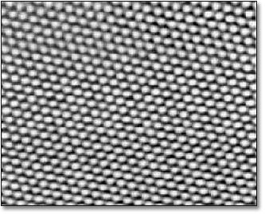
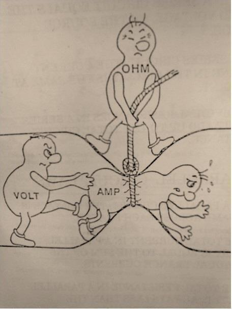

Neurons for Computer Geeks: Part II: The Shocking Complexity of Electricity
Monday, August 31, 2015
In part I we started to describe the basic morphology of the neuron. In order to continue, we now need to take a detour around the world of electricity. If you are an electricity nerd, I apologise in advance; this is what happens when a computer scientist escapes into your realm, I'm afraid.
"Honor the charge they made!"
First and foremost, we need to understand the concept of charge. It is almost a tautology that atoms are made up of "sub-atomic" particles. These are the proton, the neutron and the electron. The neutron is not particularly interesting right now; however the electron and the proton are, and all because they have a magical property called charge. For our purposes, it suffices to know that "charge" means that certain sub-atomic particles attract or repeal each other, according to a well defined set of rules.
You can think of a charge as a property attached to the sub-atomic particle, very much like a person has a weight or height, but with a side-effect; it is as if this property makes people push or hug each other when they are in close proximity, and they do so with the same strength when at the same distance. This "strength" is the electric force. How they decide whether to hug or push the next guy is based on the "sign" of the charge - that is, positive or negative - with respect to their own charge "sign". Positives push positives away but hug negatives and vice-versa.
For whatever historical reasons, very clever people decided that an electron has one negative unit of charge and a proton has a positive unit of charge. The sign is, of course, rather arbitrary. We could have just as well said that protons are red and electrons are blue or some other suitably binary-like convention to represent these permutations. Just because protons and electrons have the same charge, it does not follow that they are similar in other respects. In fact, they are very different creatures. For example, the electron is very "small" when compared to the proton - almost 2000 times "smaller". The relevance of this "size" difference will become apparent later on. Physicists call this "size" mass, by the by.
As it happens, all of these sub-atomic crazy critters are rather minute entities. So small in fact that it would be really cumbersome if we had to talk about charges in terms of the charge of an electron; the numbers would just be too big and unwieldy. So, the very clever people came up with a sensible way to bundle up the charges of the sub-atomic particles in bigger numbers, much like we don't talk about millimetres when measuring the distance to the Moon. However, unlike the nice and logical metric system, with its neat use of the decimal system, physicists came up instead with the Coulomb, or C, one definition of which is:
- 1 Coloumb (1C) = 6.241 x 1018 protons
- -1 Coloumb (-1C) = 6.241 x 1018 electrons
This may sound like a very odd choice - hey, why not just 1 x 1020 or some other "round" number? - but just like a kilobyte is 1024 bytes rather 1000, this wasn't done by accident either. In fact, all related SI units were carefuly designed to work together and make calculations as easy as possible.
Anyway, whenever you see q or Q in formulas it normally refers to
a charge in Coulombs.
Units, Dimensions, Measures, Oh My!
Since we are on the subject of SI, this is probably a good point to talk about units, dimensions, measurements, magnitudes, conversions and other such exciting topics. Unfortunately, these are important to understand how it all hangs together.
A number such as 1A makes use of the SI unit of measure "Ampere" and
it exists in a dimension: the dimension of all units which can talk
about electric charges. This is very much in the same way we can talk
about time in seconds or minutes - we are describing points in the
time dimension, but using different units of measure - or just units,
because we're lazy. A measurement is the recording of a quantity with
a unit in a dimension. Of course, it would be too simple to call it a
"quantity", so instead physicists, mathematicians and the like call it
magnitude. But for the lay person, its not too bad an approximation to
replace "magnitude" with "quantity".
Finally, it is entirely possible to have compound dimensional units; that is, one can have a unit of measure that refers to more than one dimension, such as say "10 kilometres per second".
I won't discuss conversions just now, but you can easily imagine that formulas that contain multiple units may provide ways to convert from one unit to another. This will become relevant later on.
Go With the Flow
Now we have a way of talking about charge, and now we know these things can move - since they attract and repel each other - the next logical thing is to start to imagine current. The name sounds magical, but in reality it is akin to a current in a river: you are just trying to figure out how much water is coming past you every second (or in some other suitable unit in the time dimension). The exact same exercise could be repeated for the number of cars going past in a motorway or the number of runners across some imaginary point in a track. For our electric purposes, current tells you how many charges have zipped past over a period of time.
In terms of SI units, current is measured in Amperes, which have the symbol A; an Ampere tells us how many Coloumbs have flown past in a second. Whenever you see I in formulas it normally refers to current.
Now lets see how these two things - Coulombs and Amperes - could work together. Lets imagine an arbitrary "pipe" between two imaginary locations, one side of which with a pile of positive charges and, on the other side, a pile of negative charges - both measured in Coulombs, naturally. In this extraordinarily simplified and non-existing world, the negative charges would "flow" down the pipe, attracted by the positive charges. Because the positive charges are so huge they won't budge, but the negative charges - the lighter electrons - would zip across to meet them. The number of charges you see going past in a time tick is the current.
Resist!
Going back to our example of current in a river, one can imagine that some surfaces are better at allowing water to flow than others; for example, a river out in the open is a lot less "efficient" at flowing than say a plastic pipe designed for that purpose. One reason is that the river has to deal with twists and turns as it finds a path over the landscape whereas the pipe could be laid out as straight as possible; but it is also that the rocks and other elements of the landscape slow down water, whereas a nice flat pipe would have no such impediments. If one were to take these two extremes - a plastic pipe designed for maximum water flow versus a landscape - one could see that they affect flow differently; and one could be tempted to name the property of "slowing down the flow" resistance, because it describes how much "resistance" these things are offering to the water. If you put up a barrier to avoid flooding, you probably would want it to "resist" water quite a lot rather than allow it to flow; and you can easily imagine that sand and sandbags "resist" water in very different ways.
Resistance is a fundamental concept in the electrical world. The gist of it is similar to the contrived examples above, in that not all materials behave the same way with regards to allowing charges to flow. Some allow them to flow freely nearly at maximum speed whereas others do not allow them to flow at all.
Since we are dealing with physics, it is of course possible to measure resistance. We do so in SI units of Ohms, denoted by the Greek letter upper-case Ω.
As we shall see, not all materials are nicely behaved when it comes to resistance.
You've Got Potential Baby!
Lets return to our non-existing "pipe that allows charges to flow" scenario, and take it one step further. Imagine that for whatever reason our pipe becomes clogged up with a blockage somewhere in the middle. Nothing could actually flow due to this blockage so our current drops to zero.
According to the highly simplified rules that we have learned thus far, we do know that - were there to be no blockage - there would be movement (current). That is, the setup of the two bundles in space is such that, given the right conditions, we would start to see things flowing. But, alas, we do not have the right conditions because the pipe is blocked; hence no flow. You could say this setup has "the potential" to get some flow going, if only we could fix the blockage.
In the world of electricity, this idea is captured by a few related concepts. If we highly simplify them, they amount to this:
- electric potential: the idea that depending where you place a charge in space, it may have different "potential" to generate energy. We'll define energy a bit better latter on, but for now a layman's idea of it suffices. By way of an example: if you place a positive charge next to a lump of positive charges and let it go, it will move a certain distance away from the lump. Before you let the charge go, you know the charge has potential to move away. You can also see that the charge will move by different amounts depending how close you place it to the lump; the closer you place it, the more it will move. When we are thinking of electric potential, we think of just one charge.
- electric potential energy: clearly it would be possible to move two or three charges too, as we did for the one; and clearly they should produce more energy than a single charge. So one simple way of understanding electric potential energy is to think of it as the case of electric potential that deals with the total number of charges we're interested in, rather than just one.
Another way of imagining these two concepts is to think that electric potential is a good way to measure things when you don't particularly care about the number of charges involved; it is as if you scaled everything to just one unit of charge. Electric potential energy is more when you are thinking of a system with an actual number of charges. But both concepts deal with the notion that placing a charge at different points in space may have an impact in the energy you can get out of it.
Having said all of that we can now start to think about electric potential difference. It uses the same approach as electric potential, in that everything is scaled to just one unit of charge, but as the name implies, it provides a measurement of the difference between the electric potential of two points. Electric potential difference is more commonly known as voltage. Interestingly, it is also known as electric pressure, and this may be the most meaningful of its names; this is because when there is an electric potential difference, it applies "pressure" on charges which force them to move.
The SI unit Volt is used to measure electric potential, electric potential energy and electric potential difference amongst other things. This may sound a bit weird at first, but it is just because one is unfamiliar with these concepts. Take time, for example: we use minutes as a unit of measure of all sorts of things (duration of a football game, time it takes for the moon to go around the earth, etc.). We did not invent a new unit for each phenomenon because we recognised - at some point - that we were dealing with points in the same dimension.
Quick Conceptual Mop-Up
Before we move over to the formulae, it may be best to tie up a few loose ends. These are not strictly necessary, but just make the picture a bit more complete and moves us to a more realistic model - if still very simplistic.
First, we should start with atoms; we mentioned charges but skipped them. Atoms are (mostly) a stable arrangement of charges, placed in such a way that the atoms themselves are neutral - i.e. contain exactly the same amount of negative and positive charges. We mentioned before that protons and electrons don't really get along, and neutrons are kind of just there, hanging around. In truth, neutrons and protons also really get along, via the aptly named nuclear force; this is what binds them together in the nucleus of the atom. Electrons are attracted to protons and live their existences in a "cloud" around the nucleus. Note that the nucleus is more than 99% of the mass of the atom, which gives you an idea of just how small electrons are.
The materials we will deal with in our examples are made of atoms, as are, well, quite a few things in the universe. These materials are themselves stable arrangements of atoms, just like atoms are stable arrangements of protons, neutrons and electrons. As you can see in the picture, these look like lattices of some kind.

In practice, copper wires are made up of a great many things rather
than just atoms of copper. One such "kind of thing" is the unbound
electrons - or free-moving electrons; basically electrons are not
trapped into an atom. As we mentioned before, electrons are the ones
doing most of the moving. Left to their own devices, electrons in a
conducting material will just move around, bumping into atoms in a
fairly random way. However, lets say you take one end of a copper wire
and plug it to the + side of a regular AA battery and then take other
end and plug it to the - side of the battery. According to all we've
just learned, its easy to imagine what will happen: the electrons
stored in the - side will zip across the copper to meet their proton
friends at the other end. This elemental construction, with its
circular path, is called a circuit. What you've done is to upset the
neutral balance of the copper wire and got all the electrons to move
in a coordinated way (rather than random) from the - side to the +
side.
It is at this juncture that we must introduce the concept of ions. An ion is basically an atom that is no longer neutral - either because it has more protons than electrons (called a cation) or more electrons than protons (called an anion). In either case, this comes about because the atom has gained or lost some electrons. Ions will become of great interest when we return to the neuron.
One final word on resistance and its sister concept of conductance:
- Resistance is in effect a byproduct of the way the electrons are arranged in the electron cloud and is related to the ionisation
mentioned above; certain arrangements just don't allow electrons to flow across.
- Conductance is the inverse of resistance. When you talk about resistance you are focusing on the material's ability to impair movement of charges; when you talk about conductance you are focusing on the material's ability to let charge flow through.
The reason we choose copper or other metals for our examples is because they are good at conducting these pesky electrons.
Ohm's Law
We have now introduced all the main actors required for one of the main parts in the play: Ohm's Law. It can be stated very easily:
\[ V = R I \]
And here's a picture to aid intuition.

The best way to understand this law is to create a simple circuit.
On the left we have a voltage source, which could be our 1.5V AA battery. On the right of the diagram we have a resistor - an electric component that is designed specifically to "control" the flow of the electric current. Without the resistor, we would be limited by how much current the battery can pump out and how much "natural" resistance the copper wire has, which is not a lot since it is very good at conducting. The resistor gives us a way to limit current flow from these theoretical maximum limitations.
Even if you are not particularly mathematically oriented, you can easily see that Ohm's Law gives us a nice way to find any of these three variables, given the other two. That is to say:
\[ R = \frac{V}{I} \]
\[ I = \frac{V}{R} \]
These tell us many interesting things such as: for the same resistance, current increases as the voltage increases. For good measure, we can also find out the conductance too:
\[ G = \frac{I}{V} = \frac{1}{R} \]
It is important to notice that not everything obeys Ohm's law - i.e. behave in a straight line. The conductors that obey this law are called ohmic conductors. Those that do not are called non-ohmic conductors. There are also things that obey to Ohm's Law, for the most part. These are called quasi-ohmic.
What next?
We have already run out of time for this instalment but there are still some more fundamental electrical concepts we need to discuss. The next part will finish these and start to link them back to the neuron.
| Back to previous chapter | Back to chapter index. | Forward to next chapter |